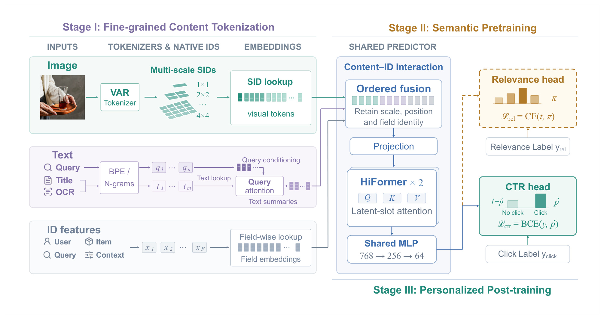
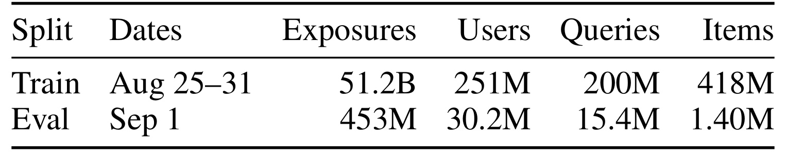
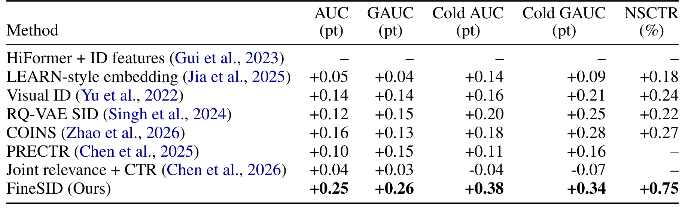
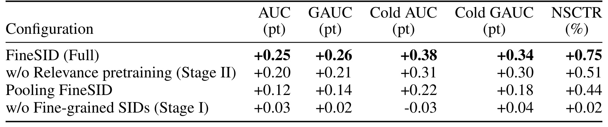
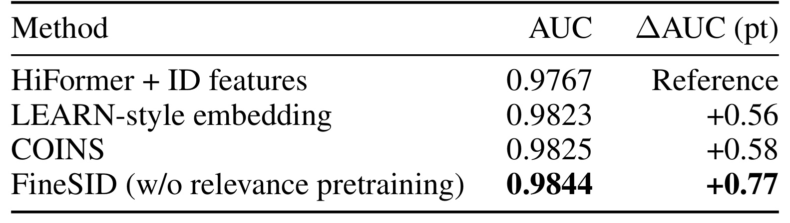
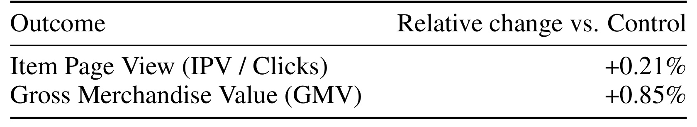

FineSID：从内容、相关性到个性化的渐进式 CTR 学习
论文：Progressive Learning from Content to Relevance to Personalization for CTR Prediction。作者 Zhiguang Yang、Yulin Yang、Fuyu Lv、Dan Ou，机构为阿里巴巴。论文于 2026 年 10 月 21 日首次公开，本笔记于 2026 年 10 月 23 日基于原文、附录与图表核对。论文入口：arXiv:2610.29138。原文未提供本轮可独立核验的代码或项目入口，以下实验数值均为作者报告，没有独立复现。
标准量化方案会过度压缩内容，丢弃细粒度语义匹配所需的空间结构与文本细节。
1. 背景和问题
1.1 搜索点击同时依赖内容、相关性与个人偏好
淘宝搜索中，一个商品被展示后是否获得点击，涉及三个相互关联却并不等价的问题：图片和标题到底表达了什么，商品能否满足当前查询，以及这个用户是否喜欢眼前的具体展示。只处理第一个问题，可能得到内容相似的向量，却不知道其是否符合查询中的限制条件；只处理第二个问题，又无法解释为什么同样相关的两个商品会吸引不同的人；只依赖历史点击记忆，则容易在没有充分交互证据的商品或新创意上失去判断依据。FineSID 将这三个问题组织成内容、相关性、个性化的渐进学习流程，最终服务于带有用户和上下文条件的点击概率预测。
这里的个性化并没有被定义为直接让大语言模型为用户排序。论文保留工业稀疏特征预测器的基本架构，将用户、商品、查询、上下文等类别字段与多模态内容一起输入网络。大模型在上游提供更明确的相关性监督，图像模型在离线提供内容代码，在线排序仍由可以查表和进行特征交互的预测器完成。因而它的实际问题是：如何让既有依赖标识符和历史共现的系统获得内容理解能力，同时使训练目标和服务接口能够连续衔接。
纯标识符模型擅长记住某类用户、查询、商品共同出现时的点击规律。对于头部商品，这种经验可能非常有效；但同一个商品可以有不同图片、标题或创意，商品标识符本身无法表达这些细节。作者特别强调同商品创意选择：固定商品身份后，排序系统还应辨别哪一张图或哪一种文案更适合当前意图。这不是商品级召回能力的另一个名字，而是主动减少商品身份差异后，对内容分辨率提出的一项更具体要求。后文的创意评测正是用来补足常规点击指标无法单独证明的这一点。
1.2 为什么稠密向量和粗粒度语义标识仍可能不足
一种常见路径是离线计算图像或文本的连续表示，再将它们加入点击率模型。这样做能利用多模态模型已有知识，但连续向量和稀疏类别字段之间存在接口与分布差异：类别特征通过查表学习，内容向量往往成为后融合输入，未必能充分参与底层字段交互。另一种路径是将全局内容向量量化为几个语义标识，让它们像其他类别特征一样进入模型。这样改善了接口一致性，却可能在量化之前就已经把空间布局和文本细节压缩掉；下游再强的交互层，也无法从一个丢失细节的输入中恢复查询真正关心的局部属性。
论文对上述局限的讨论指向一种表示粒度选择，而不是证明所有连续表示都必然失效。全局向量可以包含丰富语义，适合检索和近邻比较；FineSID 更关心在细粒度排序中，模型能否直接访问具体位置、尺度及文本字段的信息。保留这些结构意味着不同空间位置的视觉代码不会在输入前混成一个均值，标题与识别文字也不会被无差别揉成同一个内容摘要。不同查询可以关注不同文本部分，交互网络因而有机会学习这段描述与这个查询是否一致，而不仅是记住某个内容向量与点击的相关性。
这里还有一个与监督方式有关的困难。点击标签同时受到相关性、视觉吸引力、价格偏好、位置和展示策略等因素影响。把所有内容能力都交给最终点击损失学习，可能使模型过早依赖容易捕捉的历史共现，而没有学好显式的查询与商品匹配。作者提出先训练相关性，再迁移到点击任务，是希望用相对明确的语义目标为整个预测骨干建立起点，而不是只提供一套预训练嵌入，随后让随机初始化的交互网络重新学习如何使用它们。
1.3 论文想验证的链条与阅读边界
完整假设可以拆成三个连续环节：保留内容细节能够改善输入信息质量；相关性训练能够让嵌入和交互层形成匹配先验；点击后训练能够把该先验调整为用户偏好。三者不是三个并列模型，第二和第三阶段使用同一个输入接口和共享网络，输出头才对应不同任务。理解这一点，才能区分 FineSID 与仅量化视觉向量、仅迁移嵌入、或者把相关性和点击目标同时混在一起训练的方案。
论文提供的证据也有明确层次。淘宝离线实验覆盖完整流程和多个消融，公开 MMCTR 只覆盖没有相关性预训练的变体，同商品创意指标是日志回放估计，线上结果是作者报告的七天实验。它们分别支持不同主张，不能互相替代。特别是公开数据上的收益并不能证明相关性教师或全参数迁移在任意业务都有效；工业模型的整体收益也不能直接归因于三十个视觉代码中的某个尺度。更合理的阅读方式是追踪每一项主张是否有对应控制条件，并把尚未隔离的因素留作复现问题。
对推荐工程而言，值得带走的核心问题是输入表示和训练顺序是否相互配合。若内容仍然高度压缩，语义预训练可能缺少可操作的细节；若内容已经细粒度化，却仍只接受点击监督，模型也可能低估匹配信号。FineSID 的意义在于把两者接成一个能直接进入工业稀疏特征系统的实验方案。它还要求研究者区分商品身份、内容版本与曝光上下文，避免在数据构造时把同商品不同创意合并，从而无意中抹去本文要学习的对象。其收益能否迁移到其他场景，仍需结合内容类型、教师标签质量、曝光分布与服务预算判断，不能由论文标题中的渐进学习概念直接推出。
2. 方法
2.1 Stage I：保留尺度、位置和字段的细粒度离散内容
FineSID 将一次曝光写成用户和上下文、搜索查询、商品身份及具体内容的组合。对应原文公式一，最终任务为：
符号解释：其中，$u$ 包括用户与上下文特征，$q$ 是查询，$i$ 为商品标识，$c$ 为图像和文本等细粒度内容；$\theta$ 是共享特征处理与交互参数，$\psi_{\mathrm{ctr}}$ 是点击任务输出头。同一商品可以对应不同内容，因此固定 $i$ 并不固定 $c$。这个区分贯穿整篇文章：模型既要有跨商品排序能力，也要能够在商品身份不变时感知创意差异。

Figure 1 左侧区分了图像、文本与既有类别字段三路输入，右侧则显示相关性头与点击头分属不同训练阶段。图像经过 VAR 分词器产生多尺度离散代码，再进入任务可训练的查表层；查询、标题和识别文本保留来源身份，通过查询条件注意力产生相应摘要；用户、商品、查询和上下文字段继续走各自的嵌入查表。中间的有序拼接、投影、潜在槽位交互和共享多层感知机在相关性训练与点击后训练之间连续保留。这张图的核心机制是输入粒度和共享网络共同迁移，不能只读成在既有模型外面添加一个视觉向量。右上相关性监督先让整条共享支路学习匹配，右下点击监督再调整同一支路，使它适应用户行为。
沿图中的箭头还可以辨认离线和在线的边界。计算较重的视觉编码发生在内容侧，线上预测拿到的是离散代码，不需要运行自回归图像生成器。在线仍要对多个代码查表，按固定尺度和位置拼接，并进行特征交互，所以离线提取并不等于在线没有新增成本。文本支路中的查询注意力尤其重要：它让文本的最终表示随当前查询变化，而不是对所有查询复用同一个标题均值。图中两个输出头也不是同时组合打分的证据，原文明确在第三阶段丢弃相关性头，新建点击头。因而迁移的是匹配能力所在的共享参数，不是把两个任务预测值加权混合。若实际服务同时输出相关性分数再与点击分数融合，那将是另一种系统设计，不能当作这篇论文的默认推理流程。 视觉分词采用已经预训练的 VAR 检查点，从原生尺度安排中选择四组代码图。原文公式三为：
符号解释：$S^v_\ell$ 表示第 $\ell$ 个尺度的视觉代码图，$V=4096$ 是视觉码本大小，$h_\ell,w_\ell$ 为该尺度网格尺寸。四个尺度共提供 $1+4+9+16=30$ 个代码。粗尺度提供整体内容，细尺度使局部空间结构能够暴露给预测器。这里保留的是原分词器尺度集合的一个子集，不能误认为 VAR 只产生这四种分辨率，也不能把三十个代码理解成三十个独立语义类别。 预测器对固定视觉代码使用自己的嵌入表，原文公式四写为：
符号解释：$p$ 是尺度内部的空间位置，$m_{\ell,p}$ 为缺失代码的有效性掩码，$E_v$ 是随机初始化后随下游任务训练的嵌入表，$\operatorname{vec}$ 按固定位置顺序展平。冻结的视觉分词器和可训练的下游视觉嵌入表是两个不同对象；前者负责代码含义与空间划分，后者学习这些代码对相关性和点击的作用。代码零本身是有效标识，缺失内容必须依靠掩码处理，不能把零当作填充而悄悄删除真实视觉证据。保留固定槽位，也不同于把同一码值在所有尺度位置混合成一袋无序特征。
文本内容分别使用 BPE 与词组分词，查询、标题、OCR 等来源保留字段专属序列和词汇空间。这样输入仍是离散查表接口，但来源和次序没有被过早抹去。论文没有提供足以完整还原所有文本字段词表和长度设置的公开配置，因此复现不能仅凭使用 BPE 一句话声称与原模型相同。分词器版本、截断策略、缺失字段处理及代码刷新频率都会影响下游看到的内容，其工程定义应与模型参数一起固定。
2.2 共享特征交互架构：查询条件文本与潜在槽位
文本支路让查询嵌入充当注意力查询，将每个文本字段的词元嵌入作为键和值，得到查询条件表示 $a_t$。与简单均值相比，同一标题在不同查询下能够突出不同部分。之后原文公式五按固定次序拼接：
符号解释：$v_f$ 为第 $f$ 个传统类别字段的嵌入，$F$ 为字段数，$z_v$ 为按尺度与空间顺序展开的视觉表示，$a_t$ 为对应文本来源的查询条件表示。固定顺序使网络能够辨认哪个槽位属于什么尺度、位置或字段。它并不是声称拼接天然创造语义，而是为后续可训练投影保留稳定的结构。若输入在服务侧改变排列，即便代码值和参数不变，底层投影所接收的含义也会发生变化。
高维拼接向量首先被投影到一个七百六十八维全局状态，之后通过受 HiFormer 启发的潜在槽位注意力进行高阶特征交互，图中标出两层 HiFormer。这里没有把所有原始文本词元、视觉代码和类别字段直接放进一个巨大的自注意力序列，而是将信息压缩到固定容量的潜在状态后交互，控制随输入宽度增长的注意力开销。最后共享多层感知机以七百六十八、二百五十六、六十四的维度逐层处理，输出六十四维共享表示，再交给对应任务头。
这个结构中的折中值得明确：细粒度内容在输入端得以保留，但在底层投影和潜在槽位中仍然受到容量约束。论文证明的是这种保留方式在报告的配置下比若干基线有效，并不意味着后续压缩完全没有信息损失。三十个视觉代码增加拼接宽度和查表次数，固定容量骨干则把额外成本主要限制在前端。原文没有给出所有潜在槽位细节及逐层复杂度曲线，所以不能从图示直接推导严格的线上延迟或吞吐比例；复现应同时测量特征读取和投影，而不是只统计注意力层。
2.3 Stage II：全参数相关性预训练
第二阶段仍使用完整曝光输入，由一个基于百万级专家标注微调的 Qwen3.5 教师，输出四级匹配程度的软分布。原文公式二定义预测分布为：
符号解释：$y_{\mathrm{rel}}$ 是相关性标签，$\psi_{\mathrm{rel}}$ 为专门的相关性输出头，$\pi$ 的四个分量对应四种匹配等级。输入保留用户和上下文字段，并不意味着教师标签等价于个人点击偏好；本阶段目标仍是让模型建立显式的查询与内容匹配先验。原文公式六为软标签交叉熵：
符号解释：$D_{\mathrm{rel}}$ 是相关性训练数据，$t_k(x)$ 为教师给出的第 $k$ 级软概率。软分布保存了教师对等级的相对不确定性，学生拟合完整分布，而不是只将概率最大的类别当硬标签。相关性梯度更新整个共享可训练参数组，包括视觉和文本查表、类别字段查表、特征交互层及归一化参数；训练时归一化统计也会更新。这样点击训练的初始状态不仅包含已经学过语义的词表，还包含如何让这些词表与传统特征相互作用的稠密网络。 需要保留的证据边界是：教师经过百万级专家标注微调，不等于论文披露了相关性语料的完整规模、构造规则及与点击日志的关系。原文的数据规模表明确排除了独立相关性监督语料。若要解释该阶段收益来自何处，还需了解哪些曝光具备教师标签、困难负样本如何选择，以及软标签是否对某些商品或查询存在偏差。论文当前的消融能够比较有无该阶段，却没有单独隔离教师能力、软标签与硬标签差异，以及额外训练步数的作用。
2.4 Stage III：全参数迁移与个性化点击后训练
第三阶段直接载入相关性阶段的共享参数和归一化状态，丢弃相关性头，随机初始化点击头，并用行为日志端到端微调。原文公式七为：
符号解释：$D_{\mathrm{ctr}}$ 为点击训练数据，$y$ 为二元点击标签，$p$ 为点击头输出概率。此时视觉分词器仍不受点击梯度更新，下游查表和共享骨干则继续训练。附录说明，模型包含六十五个动态类别嵌入表；迁移时完整保留一百九十七项稠密网络状态及归一化条目，同时重置稀疏 Adagrad 累积量和训练步。保留参数但重置优化器历史，使点击阶段不直接继承相关性任务形成的稀疏自适应学习率统计，这与把全部优化状态无条件续训不同。
从训练到推理，输入接口保持一致，最终线上只使用点击任务所需的输出。先学相关性再学点击，是让语义先验接受个性化行为修正；它并不要求相关性预测在后训练后维持原始数值，也没有加入显式防遗忘约束。若点击分布变化大，语义能力保留多少仍是一个待测问题。这里最有复用价值的操作细节，是把迁移整个预测器的范围落实到查表、交互网络、归一化和优化器累积状态，而不是只用全参数三个字概括所有训练状态。
3. 实验结果
3.1 数据、训练配置与指标口径

Table 1 对应淘宝搜索原始曝光日志的时间切分，训练区间为二〇二六年八月二十五日至三十一日，离线评测为九月一日。训练约五百一十二亿次曝光，覆盖约二点五一亿用户、二亿查询与四点一八亿商品；评测约四点五三亿次曝光，约三千零二十万用户、一千五百四十万查询和一百四十万商品。这些用户、查询和商品数量是整个切分上非空标识符的去重估计，训练侧先聚合七天再统计，不是将每日去重数直接相加。原文保留重复用户、查询和商品组合的曝光行，因此样本单位是曝光，而不是独立三元组。该表描述方法特定特征和教师标签可用性筛选之前的原始点击数据，也不包括独立相关性语料；不能据此认定所有对比模型最终使用了完全相同数量的有效教师样本。训练与评测的商品规模差异也提示读者应进一步核对具体流量、清洗与内容可用条件，原文没有提供足以独立复原这些差异的细分统计。
训练使用固定学习率零点零一的 Adagrad，稠密和稀疏参数均由其优化，没有预热或衰减。作者使用六十四张 NVIDIA H20，每卡批量四千零九十六，总批量二十六万二千一百四十四。这个配置反映的是工业训练条件，不能把论文的训练预算直接视作轻量可复现成本。原文没有给出相关性阶段和点击阶段各自的训练总步数、端到端训练时长、教师生成成本及详细内存峰值，因此现有结果主要衡量质量增益，尚不能计算完整投入产出比。
指标方面，整体 AUC 衡量正负曝光的排序能力，GAUC 则在有效查询组内计算 AUC 后按曝光数加权。原文附录公式九为：
符号解释：$n_g^+,n_g^-$ 为组内正负曝光数，只有同时存在两类样本的组进入加权集合。因此 GAUC 不是每个查询等权，也不能与按用户分组或按商品分组的同名指标直接比较。论文冷启动子集定义为评测当天浏览量少于一千的商品，包含低曝光商品，不等于全部都是首次出现、训练中从未见过的新商品。这一口径必须随数值一起保留，才能正确解释稀疏性收益。
3.2 淘宝主结果：整体、冷门商品与同商品创意

Table 2 统一以 HiFormer 加类别特征为参照。FineSID 的整体 AUC、GAUC 分别提高零点二五、零点二六个百分点，冷启动子集分别提高零点三八、零点三四个百分点，同商品创意指标 NSCTR 相对提高百分之零点七五。前四列是绝对百分点差，最后一列是相对百分比，二者不能混写。例如 AUC 增加零点二五个百分点并不等于 AUC 相对提高百分之零点二五；表中也没有给出淘宝基线的绝对 AUC，不能自行推算最终分数。对同商品创意而言，百分之零点七五描述回放指标相对于其基线的变化，不是用户点击率绝对增加零点七五个百分点。
对比方法覆盖了连续嵌入、视觉离散标识、残差量化语义标识、COINS、PRECTR 和相关性与点击联合训练。FineSID 在表中所有已报告指标上都是最优，但不同基线的强项并不相同。例如 COINS 整体 AUC 提高零点一六个百分点，冷组 GAUC 提高零点二八个百分点；RQ-VAE 的整体 GAUC 提高零点一五个百分点，略高于 Visual ID 的零点一四，但对应 AUC 又略低。这样的变化提醒我们，整体与分组指标衡量的是不同排序关系，不能只看单列将全部方法排成一条绝对优劣序列。
连续嵌入方案整体 AUC 提高零点零五个百分点，Visual ID 为零点一四，FineSID 为零点二五，说明在作者设置下离散内容接口与更细粒度表示值得关注。但完整 FineSID 同时改变表示和训练流程，不能仅用这组三行便断言所有差值都来自保留空间位置。联合相关性与点击方法在冷组出现负增益，也只能说明该实现和设置不如本次基线，不能扩展为多任务学习一般无效。部分方法的 NSCTR 显示缺失，缺失不代表零收益；论文没有报告的列应保留未知，不能人为补齐。主表提供了总体优势，而因果归因仍需继续查看消融。
3.3 消融：相关性预训练与结构保真分别贡献什么

Table 3 的每一行仍是相对 HiFormer 的增益，而不是相对完整 FineSID 的退化值。去掉相关性预训练后，整体 AUC 和 GAUC 从零点二五、零点二六下降到零点二零、零点二一个百分点，冷组从零点三八、零点三四降至零点三一、零点三零，NSCTR 相对增益从百分之零点七五降至百分之零点五一。可以据此说相关性预训练提供额外收益，但不能说没有它模型就完全失效；保留细粒度内容并直接用点击训练仍优于该基线。两行 NSCTR 相对增益相差零点二四个百分点，是以共同基线为分母的增益差，不应写成模型真实 NSCTR 绝对下降零点二四个百分点。
均值池化变体将查询条件跨注意力和多尺度槽位替换为平坦均值聚合，整体 AUC 增益仅零点一二个百分点，冷组 GAUC 为零点一八，NSCTR 为百分之零点四四。这一对比支持结构化细节和查询条件处理的重要性，但它同时去除了两个设计，所以无法分别量化空间位置、尺度分离和文本条件注意力的独立贡献。若只改变视觉汇聚方式而保持文本支路，再只改变文本支路，才更接近逐模块归因。表中没有这样的拆分，不能把零点一三个百分点 AUC 差值全部计到任何单个组件上。
完全移除细粒度语义标识后，整体 AUC 只提高零点零三个百分点，冷组 AUC 比 HiFormer 低零点零三个百分点，NSCTR 只改善百分之零点零二。与完整模型及去预训练行结合看，证据更接近相关性信号必须有足够细致的内容接口才能充分发挥作用，而不是只要先相关性训练，任意输入都能获益。不过这一行也缺乏详细训练计算匹配说明，没有报告不同配置的随机种子误差或置信区间。当前可以确认证据方向与作者假设一致，尚不能将全部边际差异解释为完全排除训练预算和优化因素后的净因果效应。
3.4 公开 MMCTR 验证的范围

Table 4 提供绝对 AUC：HiFormer 为零点九七六七，连续嵌入方案零点九八二三，COINS 零点九八二五，FineSID 去相关性预训练变体零点九八四四。与 HiFormer 相减得到零点零零七七，即零点七七个百分点；相对 COINS 则是零点一九个百分点。公开数据结果使细粒度离散内容接口的价值不再只依赖私有淘宝日志，是一个有用的外部数据场景证据。然而论文明确说明 MMCTR 缺少第二阶段需要的查询与商品相关性标注，因此这一行只使用内容分词与点击训练，不能称为完整三阶段 FineSID 的公开复现。
这一区别也影响对迁移能力的理解。淘宝消融回答的是在工业设置下加上语义预训练是否有帮助，MMCTR 回答的是不依赖该教师语料，细粒度内容接口本身是否仍有效。两者结合支持方案的分层价值，但尚未证明工业教师到公开场景的直接迁移。论文只给出了一个公开数据表，未展示更多领域、不同冷启动强度或不同特征可用率下的结果，也没有随机种子方差。读者不应因为该表的 AUC 很高，就认为模型已解决所有多模态排序问题；指标上限与数据负采样、任务难度有关，其数值不能与淘宝的未知绝对 AUC 作横向比较。更有区分度的后续验证，是在不改变公开任务划分的前提下构造可核验的相关性监督，对照有无教师阶段、仅嵌入迁移和完整骨干迁移。只有这样，才能把公开结果从表示有效性扩展到训练流程有效性的验证，而不是把两种证据在措辞中合并。复现报告也应保留这个变体名称，明确它的输入、监督和参数初始化，避免下游读者依据主方法名称误判测试范围。
3.5 NSCTR：固定商品后的创意回放
原文公式八先对每次日志曝光的同商品候选创意打分，选择最高分创意，只在选择与历史实际展示一致时形成回放匹配，再进行商品级加权：
符号解释：$N_i$ 为商品原始曝光数，$M_i$ 为匹配曝光数，$C_i$ 为匹配曝光中的点击数。$C_i/M_i$ 是模型选择与日志展示一致条件下的经验点击率，$N_i$ 为商品权重。公式仅在有匹配的商品上计算，避免对零分母做无定义操作。它与按商品分组计算 GAUC 不同：后者仍可能比较同商品在不同用户或上下文下的正负曝光，NSCTR 则直接围绕创意选择与历史展示的匹配构造。
该指标确实削弱了跨商品身份记忆的直接作用，因为候选共享相同商品标识。但日志回放匹配不等于随机分配创意的实验，匹配子集受历史展示策略和候选可用性影响。如果某些创意更常被历史策略展示，它们可能更容易形成匹配，模型之间的匹配覆盖也可能不同。论文没有报告倾向校正、匹配率分层、有效商品覆盖以及估计不确定性，因而百分之零点七五应理解为作者定义的离线回放指标改善，而非已识别的创意选择因果点击增益。后续若用于评估新的视觉生成策略，还应同时监测哪些商品和创意被排除在匹配集合之外，避免用少量高匹配样本代替完整流量效果。
3.6 七天线上实验和服务成本

Table 5 报告相对生产对照组的七天实验结果：商品详情页访问或点击指标 IPV 提高百分之零点二一，成交总额 GMV 提高百分之零点八五。两个业务指标方向一致，说明作者的在线部署没有只改善离线排序分数，也报告了实际流量中的收益。但 GMV 的相对增幅大于点击增幅，不能据此推断客单价或转化率各自增加多少；原文没有分解转化链条，也没有给出对应绝对交易量。这里保留的是作者报告的组合业务结果，不能自行拼接出论文没有测试的用户满意度或长期留存结论。
作者称两项提升通过统计显著性检验，但正文没有给出具体检验方法、显著性阈值、概率值、置信区间、流量占比、随机分组单元及实验起止日期。因此可以准确表述为作者报告显著，不能写为已独立验证统计显著，也无法检验是否控制了多重比较、用户跨组影响或同期流量变化。七天覆盖了一个短周期，尚不说明长期商品曝光反馈、模型更新和内容策略适应后的稳定收益。对于准备迁移该方案的团队，补齐实验设计和分层效应比直接套用总体百分比更重要。
服务成本方面，作者称重视觉提取离线完成，晚期排序服务延迟没有显著增加；在线新增的主要工作是额外代码查表和更宽的底层投影，随后进入固定容量潜在槽位。这个解释与网络结构相符，却没有配套披露端到端延迟分位数、吞吐、缓存命中、内存和特征存储开销，也没有独立效率表。因而未显著增加延迟应作为作者经验报告，不能转换为零开销结论。特别是将该方案移至候选规模极大的早期检索阶段时，三十个视觉代码和内容更新带来的系统成本可能成为主要约束，论文也将这一方向列为后续问题。
4. 总结
4.1 这篇论文最值得保留的判断
FineSID 把一个容易被简化为给点击率模型加内容的问题，细化为输入信息如何保留、语义交互如何初始化、用户偏好如何继续训练三个连续步骤。视觉分词器离线提供多尺度代码，下游通过独立可训练查表与传统字段统一；相关性预训练更新完整共享预测器，再由点击监督调整同一骨干。其可迁移价值既包括表示选择，也包括归一化和优化器历史在阶段交接时的明确处理。实验支持细粒度内容接口的有效性，并在工业场景支持额外相关性预训练的收益，但证据尚不足以把所有优势归给任一单模块。
4.2 局限与风险
第一，视觉分词器为图像重建预训练且保持冻结，重建保真不等于最优查询匹配，任务可训练查表只能调整已有代码的使用，不能恢复分词器没有保留的信息。第二，相关性教师和数据选择细节不完整，额外训练量、软标签质量与全参数迁移的贡献没有充分拆开；独立团队难以严格复刻。第三，均值池化消融同时改变视觉结构和文本条件注意力，无法分别确定两者的边际价值，也没有尺度数、词表大小及潜在容量的系统曲线。
第四，公开 MMCTR 不含相关性阶段，验证了内容接口而未验证完整渐进流程，跨业务迁移到召回或转化预估仍待测试。第五，冷启动只按评测日低浏览量定义，不能代替严格新商品和未见内容测试；同商品回放又有历史策略匹配偏差，不能与随机创意实验等同。第六，线上显著性只有作者声明，缺少区间和实验设计细节，服务效率也没有可复算的端到端数字。上述缺口限制的是结论的外推精度，并不否定当前表格中的质量改善。另一个实际问题是内容版本一致性：若图片已更新而离线代码尚未刷新，线上输入可能描述旧创意。原文没有给出这种延迟和异常处理的量化分析，实际系统需要将内容、代码与日志版本绑定，才能准确解释后续回放指标。
4.3 可操作的后续跟进
首先，固定同一骨干、样本、步数与参数预算，分别比较单尺度与多尺度、保序与池化、查询条件与非条件文本；这样能够检验收益究竟来自额外容量还是结构信息。其次，在第二阶段记录教师分布、字段缺失和样本覆盖，并对硬标签、软标签、仅迁移嵌入和完整参数迁移进行对照，同时观察后训练过程中的相关性能力是否遗忘。再次，将冷组拆成全新商品、旧低曝光商品和新创意，配合内容相似度与曝光强度分桶，检验所谓泛化是否真正跨越身份记忆。
最后，对创意选择同时报告回放匹配率、有效商品覆盖和分层不确定性，再用可解释的随机线上实验核对方向；对服务链路则联合度量代码提取刷新、特征存储、查表、底层投影及高分位延迟。只有质量和资源预算放在同一个候选规模下比较，才能判断该方案适合晚期精排、较小候选重排，还是值得为更早阶段重新设计压缩接口。这些是基于论文机制提出的验证建议，不是原文已经完成的实验。